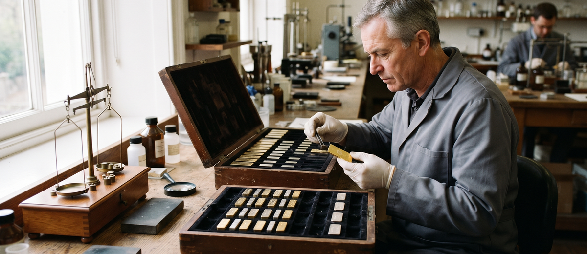

The Assay Bench. A command line tool that compares a current configuration file against a known good baseline configuration file and prints the diff between them. The baseline is the standard; the current file is the piece brought in to be tested against it.
The two files are required positional arguments. The README's own usage line names neither side of the comparison, although the two files are the tool's whole task.
Option
What it does
--format
Output format, json or yaml. The default is json; the README lists the flag with no description provided.
--indent
Output indentation. The default is 4; the README lists the flag with no description provided.
--ignore
Keys to remove from both sides before comparing, matched by bare key name at every depth.
--output
Path to the output file for the diff. If not specified, the diff is printed to stdout.
--no-color
Accepted on the command line. No colour is ever emitted either way, so the flag changes nothing.
-h
Show help message and exit.

The bench where new work is measured against the plates kept as good.
Stated limits
A found diff is not an error in this tool's exit terms: the run exits 0 whether the configurations match or have drifted. A calling script that wants to gate on drift has to read the output text rather than the exit code.
A missing or unparsable input file exits 1.
The --ignore removal works by bare key name at every depth, so ignoring a common name removes it from every section, including ones the caller never meant. There is no path form to aim it at one place.
Files are loaded as JSON or YAML by file ending, and the comparison is made with jsondiffpatch.
This tool alone of its near relations measures the current file against a baseline held to be good: its sibling validates one configuration against a schema, and its other near relation diffs two configurations with no known good side.